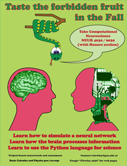

Fall 2012, 3CR
Tues/Thur 2:50 pm - 4:35 pm in General Classroom Building 707
Click the thumbnail for the full, letter-sized, PDF poster
|  |
|---|
Here is the syllabus for this class. As this is the first time this class has been taught, details may vary during the semester. It is intended only as a guide.
You will learn a mixture of concepts and theories from neuroscience alongside techniques from mathematics and computer science. To do this, we will use GSU's Virtual Computing Laboratory and Python with PyDSTool in and out of class. This requires that you have a laptop with wireless internet, a web browser, and a Remote Desktop system installed. For details about the remote desktop on your type of computer, see these notes. You will also want to use your Student Lockerbox to store your files outside of the virtual sessions.
Some helpful wikipedia pages: